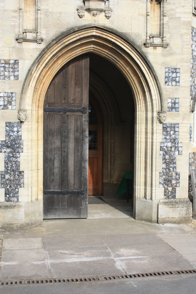

In de Kerk geboren zijn
"In de kerk geboren zijn" wordt gebruikt om aan te geven dat iemand erg slordig of nonchalant is, vooral met betrekking tot het sluiten van deuren of het achterlaten van toegangspunten open. Het impliceert dat de persoon geen zorg draagt voor het afsluiten van deuren.
Oorsprong
De oorsprong van dit spreekwoord ligt in het idee dat kerken historisch gezien openbare plaatsen waren waar deuren vaak open bleven voor gemeenschapsactiviteiten. Het verwijst naar mensen die zo gewend zijn aan een open omgeving dat ze niet eens meer de moeite nemen om deuren te sluiten.
Gebruik
Dit spreekwoord wordt vaak gebruikt om aan te geven dat iemand slordig of onvoorzichtig is, vooral met betrekking tot het afsluiten van deuren of het handhaven van privacy en veiligheid. Het wordt zowel in informele als formele contexten gebruikt.
Voorbeelden
- 'Ben je soms in de kerk geboren?' zei ze nadat hij de deur open had laten staan.
- Ze vergat altijd om de voordeur te sluiten, wat aantoonde dat ze echt in de kerk geboren was.
Vertalingen
Omdat dit spreekwoord specifiek is voor de Nederlandse taal, zijn er geen exacte equivalenten in andere talen vanwege de culturele en historische connotaties ervan.